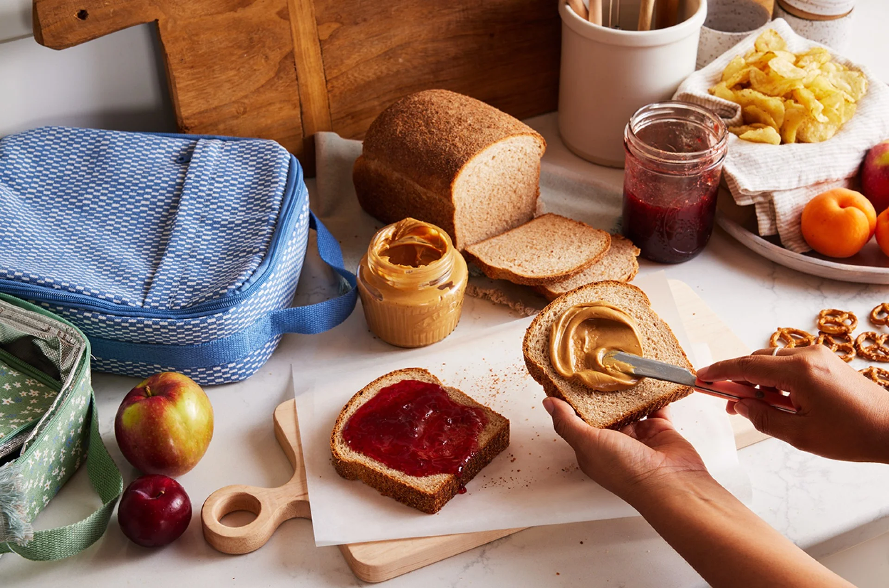

Everyday Bread

This whole wheat sandwich bread has all the heartiness of whole wheat flour but without any density or bitterness. It’s tender and yielding, flavorful and versatile; slice it up for peanut butter and jelly sandwiches or grilled cheese, or simply smear a piece with butter.
2 cups (226g)whole wheat flour1¼ cup (150g)all-purpose flour1¼ tsp (7.5g)salt2¼ tsp (7g)instant yeast2 tbsp (42g)honey2 tbsp (28g)unsalted butter, at room temperature1¼ cups (284g)whole milk, warm (110°F)¼ cup (28g)wheat germ, for coating
Weigh your flour; or measure it by gently spooning it into a cup, then sweeping off any excess.
In a large bowl or the bowl of a stand mixer fit with the dough hook, combine the flours, salt, and yeast. Add the honey, butter, and milk, mixing until no dry patches of flour remain and a soft dough forms. If mixing by hand, cover and rest for 15 minutes. If using a mixer, proceed to the next step.
Transfer the dough to a lightly floured surface and knead until a tacky, springy dough forms, or mix on medium speed until smooth, elastic, and pulling away from the sides of the bowl, 5 to 8 minutes for either method.
Return the dough to the bowl, cover, and let it rise until puffy but not necessarily doubled in volume, 2-2½ hours.
Use a bowl scraper to gently ease the dough out of the bowl onto a lightly floured work surface. Gently deflate the dough and pat it into an 8” x 12” rectangle. Shape the dough into a log by bringing the short edges toward the center, overlapping them slightly. Flatten the dough into an even layer, then starting from the top, gently roll the dough towards you to form a log and pinch the seam to seal.
Grease an 8 1/2” x 4 1/2” loaf pan. Spread the wheat germ on a rimmed baking sheet in an even layer the length of the dough log. Wet a clean kitchen towel, then wring it out; it should still be pretty damp. Roll the shaped dough over the towel to moisten the loaf, then into the wheat germ, turning to coat. Place the dough seam-side down in the prepared pan. Cover and let rise until the loaf crowns about 1” over the edge of the pan, 2-2½ hours.
Towards the end of the rising time, preheat the oven to 350°F.
Bake the loaf for 35 minutes, or until the top is golden brown and the internal temperature is at least 190°F. If the loaf is browning too quickly, tent it loosely with foil and continue baking. Remove the loaf from the oven then turn it out of the pan and onto a rack to cool completely before slicing.
Store airtight at room temperature for several days; freeze, sliced, for longer storage.